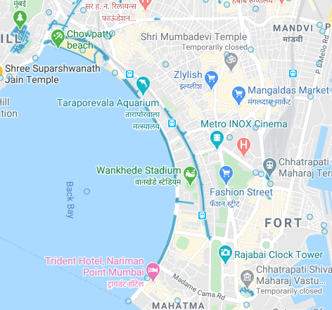
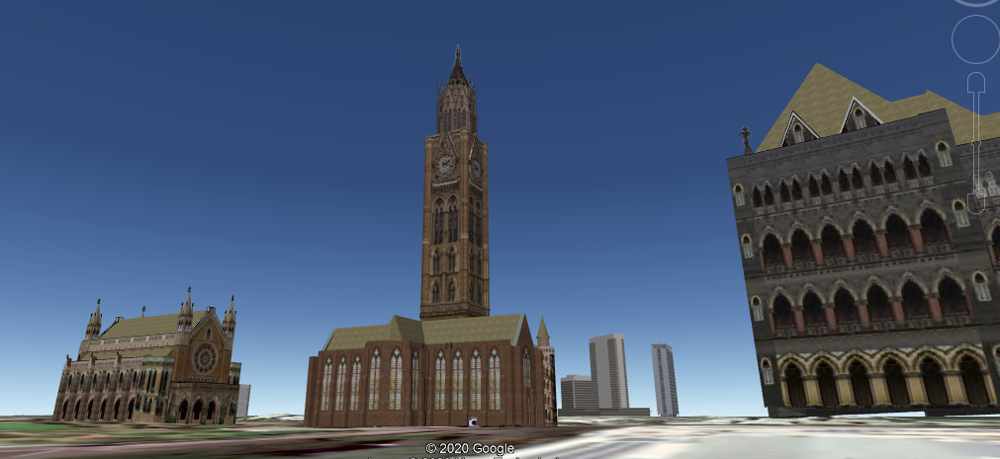

Join me for a virtual heritage walk
Hey there,
Those who know me, know how much of a history geek I am. Over the last few years I have explored the depths of old colonial Mumbai. Despite never having stayed in Mumbai, I know the backalleys of Rampart Row, the boulangeries in marine lines and the timings of fresh fish coming into Sasoon docks.


This is largely in credit to Khaki Tours. Since my college days I have attneded almost all their walks - Dalal street, Cooperage, Wodehouse, Azad Hind and Colaba Causeway. Pre-pandemic, I worked with similar advocacy groups, leading fellow nerds for such walks. And a few months into the lockdown, I realised how long it is going to be before we can do those again.
Not so fast …..
Yes, we cannot meet at Victoria terminus and walk down together, but what if we can meet on a Zoom call?
That’s not the same you’d say. It’ll be such a discounted experience.
Having only done physical heriatge walks all my life, I was also initially dismissive. but having looked at the resources and planning what kind of thread can be put together. I would now argue that:
- A virtual walk is distinct form a heritage walk. Its not a replacement for a heritage walk.
- It is much more accesible. Often the audience of such walks skews older, and as much as they would love too, they would not be able to walk with us for 1-2 hours.
- It allows me to create so many more meaningful stories since I am not bound by a 4km walking radius. We can now talk about the independence movement and pick sites from the site of the Naval mutiny to the August Kranti maidan in 10 seconds.
- Since I know what to look for and we have our monitors in front of us, we can see reference material, old photos, restricted places like never before.
Getting to the exciting part, how will it work:
Let me try to illustrate. So first of all, I am not saying we just see photos/videos and hear the story. We will maintain the ‘pedestrian’ ‘walk’ feeling. For which i will use google street view. Now google street view in Mumbai is not as great as it is in other international cities; but it is adequate..
 Street view (solid lines) is the navigable rout on which we can fly, while photo sphere (circles) is a 360* view from one place
Street view (solid lines) is the navigable rout on which we can fly, while photo sphere (circles) is a 360* view from one place


We can instantly compare different architectural styles like IndoSaracenic or Gothic. And the contrast between traditional architecture and modern art deco on reclaimed land.
The other USP is to go into places that we could not have on a regular walk. The Mumbai university’s 150 year old convocation hall is off limits for visitors. Well now we can all go in like this, and it looks amazing. Reminds me of my COEP’s convocation hall in Pune: 😃
I had no idea about how magnificent the dome looks from inside the railway offices at CST. And speaking of roofs, check out the CSVMS and the Cathedral of holy name.
There are also Google Earth’s building renderings that can take you around in 3D for any building that it identifies,


<a href="/blogs/Virtual_heritage_walks_images/bombaystockexchange.jpg" title="bombaystockexchange">
<img src="//images.weserv.nl/?url=https://tejaswa.me/blogs/Virtual_heritage_walks_images/bombaystockexchange.jpg&w=300&h=300&output=jpg&q=50&t=square" alt="bombaystockexchange" />
<span>bombaystockexchange</span>
</a>
<!-- <img src="/blogs/Virtual_heritage_walks_images/churchgate_before_reclamation_files/IMG_20180826_083616.jpg"/> -->
<a href="/blogs/Virtual_heritage_walks_images/churchgate_before_reclamation_files/IMG_20180826_083616.jpg" title="IMG_20180826_083616">
<img src="//images.weserv.nl/?url=https://tejaswa.me/blogs/Virtual_heritage_walks_images/churchgate_before_reclamation_files/IMG_20180826_083616.jpg&w=300&h=300&output=jpg&q=50&t=square" alt="IMG_20180826_083616" />
<span>IMG_20180826_083616</span>
</a>
<!-- <img src="/blogs/Virtual_heritage_walks_images/churchgate_before_reclamation_files/IMG_20180826_083829.jpg"/> -->
<a href="/blogs/Virtual_heritage_walks_images/churchgate_before_reclamation_files/IMG_20180826_083829.jpg" title="IMG_20180826_083829">
<img src="//images.weserv.nl/?url=https://tejaswa.me/blogs/Virtual_heritage_walks_images/churchgate_before_reclamation_files/IMG_20180826_083829.jpg&w=300&h=300&output=jpg&q=50&t=square" alt="IMG_20180826_083829" />
<span>IMG_20180826_083829</span>
</a>
<!-- <img src="/blogs/Virtual_heritage_walks_images/churchgate_before_reclamation_files/IMG_20190202_153251.jpg"/> -->
<a href="/blogs/Virtual_heritage_walks_images/churchgate_before_reclamation_files/IMG_20190202_153251.jpg" title="IMG_20190202_153251">
<img src="//images.weserv.nl/?url=https://tejaswa.me/blogs/Virtual_heritage_walks_images/churchgate_before_reclamation_files/IMG_20190202_153251.jpg&w=300&h=300&output=jpg&q=50&t=square" alt="IMG_20190202_153251" />
<span>IMG_20190202_153251</span>
</a>
<!-- <img src="/blogs/Virtual_heritage_walks_images/churchgate_before_reclamation_files/IMG_20190202_155600_261.jpg"/> -->
<a href="/blogs/Virtual_heritage_walks_images/churchgate_before_reclamation_files/IMG_20190202_155600_261.jpg" title="IMG_20190202_155600_261">
<img src="//images.weserv.nl/?url=https://tejaswa.me/blogs/Virtual_heritage_walks_images/churchgate_before_reclamation_files/IMG_20190202_155600_261.jpg&w=300&h=300&output=jpg&q=50&t=square" alt="IMG_20190202_155600_261" />
<span>IMG_20190202_155600_261</span>
</a>
<!-- <img src="/blogs/Virtual_heritage_walks_images/churchgate_before_reclamation_files/IMG_20190202_155647.jpg"/> -->
<a href="/blogs/Virtual_heritage_walks_images/churchgate_before_reclamation_files/IMG_20190202_155647.jpg" title="IMG_20190202_155647">
<img src="//images.weserv.nl/?url=https://tejaswa.me/blogs/Virtual_heritage_walks_images/churchgate_before_reclamation_files/IMG_20190202_155647.jpg&w=300&h=300&output=jpg&q=50&t=square" alt="IMG_20190202_155647" />
<span>IMG_20190202_155647</span>
</a>
<!-- <img src="/blogs/Virtual_heritage_walks_images/churchgate_before_reclamation_files/IMG_20190202_172552.jpg"/> -->
<a href="/blogs/Virtual_heritage_walks_images/churchgate_before_reclamation_files/IMG_20190202_172552.jpg" title="IMG_20190202_172552">
<img src="//images.weserv.nl/?url=https://tejaswa.me/blogs/Virtual_heritage_walks_images/churchgate_before_reclamation_files/IMG_20190202_172552.jpg&w=300&h=300&output=jpg&q=50&t=square" alt="IMG_20190202_172552" />
<span>IMG_20190202_172552</span>
</a>
<!-- <img src="/blogs/Virtual_heritage_walks_images/churchgate_before_reclamation_files/IMG_20190202_173024.jpg"/> -->
<a href="/blogs/Virtual_heritage_walks_images/churchgate_before_reclamation_files/IMG_20190202_173024.jpg" title="IMG_20190202_173024">
<img src="//images.weserv.nl/?url=https://tejaswa.me/blogs/Virtual_heritage_walks_images/churchgate_before_reclamation_files/IMG_20190202_173024.jpg&w=300&h=300&output=jpg&q=50&t=square" alt="IMG_20190202_173024" />
<span>IMG_20190202_173024</span>
</a>
<!-- <img src="/blogs/Virtual_heritage_walks_images/churchgate_before_reclamation_files/IMG_20190202_204748.jpg"/> -->
<a href="/blogs/Virtual_heritage_walks_images/churchgate_before_reclamation_files/IMG_20190202_204748.jpg" title="IMG_20190202_204748">
<img src="//images.weserv.nl/?url=https://tejaswa.me/blogs/Virtual_heritage_walks_images/churchgate_before_reclamation_files/IMG_20190202_204748.jpg&w=300&h=300&output=jpg&q=50&t=square" alt="IMG_20190202_204748" />
<span>IMG_20190202_204748</span>
</a>
<!-- <img src="/blogs/Virtual_heritage_walks_images/churchgate_before_reclamation_files/IMG_20190210_182555.jpg"/> -->
<a href="/blogs/Virtual_heritage_walks_images/churchgate_before_reclamation_files/IMG_20190210_182555.jpg" title="IMG_20190210_182555">
<img src="//images.weserv.nl/?url=https://tejaswa.me/blogs/Virtual_heritage_walks_images/churchgate_before_reclamation_files/IMG_20190210_182555.jpg&w=300&h=300&output=jpg&q=50&t=square" alt="IMG_20190210_182555" />
<span>IMG_20190210_182555</span>
</a>
<!-- <img src="/blogs/Virtual_heritage_walks_images/churchgate_before_reclamation_files/IMG_20190210_183338(1).jpg"/> -->
<a href="/blogs/Virtual_heritage_walks_images/churchgate_before_reclamation_files/IMG_20190210_183338(1).jpg" title="IMG_20190210_183338(1)">
<img src="//images.weserv.nl/?url=https://tejaswa.me/blogs/Virtual_heritage_walks_images/churchgate_before_reclamation_files/IMG_20190210_183338(1).jpg&w=300&h=300&output=jpg&q=50&t=square" alt="IMG_20190210_183338(1)" />
<span>IMG_20190210_183338(1)</span>
</a>
<!-- <img src="/blogs/Virtual_heritage_walks_images/churchgate_before_reclamation_files/IMG_20190210_183338(10).jpg"/> -->
<a href="/blogs/Virtual_heritage_walks_images/churchgate_before_reclamation_files/IMG_20190210_183338(10).jpg" title="IMG_20190210_183338(10)">
<img src="//images.weserv.nl/?url=https://tejaswa.me/blogs/Virtual_heritage_walks_images/churchgate_before_reclamation_files/IMG_20190210_183338(10).jpg&w=300&h=300&output=jpg&q=50&t=square" alt="IMG_20190210_183338(10)" />
<span>IMG_20190210_183338(10)</span>
</a>
<!-- <img src="/blogs/Virtual_heritage_walks_images/churchgate_before_reclamation_files/IMG_20190210_183338(11).jpg"/> -->
<a href="/blogs/Virtual_heritage_walks_images/churchgate_before_reclamation_files/IMG_20190210_183338(11).jpg" title="IMG_20190210_183338(11)">
<img src="//images.weserv.nl/?url=https://tejaswa.me/blogs/Virtual_heritage_walks_images/churchgate_before_reclamation_files/IMG_20190210_183338(11).jpg&w=300&h=300&output=jpg&q=50&t=square" alt="IMG_20190210_183338(11)" />
<span>IMG_20190210_183338(11)</span>
</a>
<!-- <img src="/blogs/Virtual_heritage_walks_images/churchgate_before_reclamation_files/IMG_20190210_183338(12).jpg"/> -->
<a href="/blogs/Virtual_heritage_walks_images/churchgate_before_reclamation_files/IMG_20190210_183338(12).jpg" title="IMG_20190210_183338(12)">
<img src="//images.weserv.nl/?url=https://tejaswa.me/blogs/Virtual_heritage_walks_images/churchgate_before_reclamation_files/IMG_20190210_183338(12).jpg&w=300&h=300&output=jpg&q=50&t=square" alt="IMG_20190210_183338(12)" />
<span>IMG_20190210_183338(12)</span>
</a>
<!-- <img src="/blogs/Virtual_heritage_walks_images/churchgate_before_reclamation_files/IMG_20190210_183338(13).jpg"/> -->
<a href="/blogs/Virtual_heritage_walks_images/churchgate_before_reclamation_files/IMG_20190210_183338(13).jpg" title="IMG_20190210_183338(13)">
<img src="//images.weserv.nl/?url=https://tejaswa.me/blogs/Virtual_heritage_walks_images/churchgate_before_reclamation_files/IMG_20190210_183338(13).jpg&w=300&h=300&output=jpg&q=50&t=square" alt="IMG_20190210_183338(13)" />
<span>IMG_20190210_183338(13)</span>
</a>
<!-- <img src="/blogs/Virtual_heritage_walks_images/churchgate_before_reclamation_files/IMG_20190210_183338(14).jpg"/> -->
<a href="/blogs/Virtual_heritage_walks_images/churchgate_before_reclamation_files/IMG_20190210_183338(14).jpg" title="IMG_20190210_183338(14)">
<img src="//images.weserv.nl/?url=https://tejaswa.me/blogs/Virtual_heritage_walks_images/churchgate_before_reclamation_files/IMG_20190210_183338(14).jpg&w=300&h=300&output=jpg&q=50&t=square" alt="IMG_20190210_183338(14)" />
<span>IMG_20190210_183338(14)</span>
</a>
<!-- <img src="/blogs/Virtual_heritage_walks_images/churchgate_before_reclamation_files/IMG_20190210_183338(15).jpg"/> -->
<a href="/blogs/Virtual_heritage_walks_images/churchgate_before_reclamation_files/IMG_20190210_183338(15).jpg" title="IMG_20190210_183338(15)">
<img src="//images.weserv.nl/?url=https://tejaswa.me/blogs/Virtual_heritage_walks_images/churchgate_before_reclamation_files/IMG_20190210_183338(15).jpg&w=300&h=300&output=jpg&q=50&t=square" alt="IMG_20190210_183338(15)" />
<span>IMG_20190210_183338(15)</span>
</a>
<!-- <img src="/blogs/Virtual_heritage_walks_images/churchgate_before_reclamation_files/IMG_20190210_183338(16).jpg"/> -->
<a href="/blogs/Virtual_heritage_walks_images/churchgate_before_reclamation_files/IMG_20190210_183338(16).jpg" title="IMG_20190210_183338(16)">
<img src="//images.weserv.nl/?url=https://tejaswa.me/blogs/Virtual_heritage_walks_images/churchgate_before_reclamation_files/IMG_20190210_183338(16).jpg&w=300&h=300&output=jpg&q=50&t=square" alt="IMG_20190210_183338(16)" />
<span>IMG_20190210_183338(16)</span>
</a>
<!-- <img src="/blogs/Virtual_heritage_walks_images/churchgate_before_reclamation_files/IMG_20190210_183338(17).jpg"/> -->
<a href="/blogs/Virtual_heritage_walks_images/churchgate_before_reclamation_files/IMG_20190210_183338(17).jpg" title="IMG_20190210_183338(17)">
<img src="//images.weserv.nl/?url=https://tejaswa.me/blogs/Virtual_heritage_walks_images/churchgate_before_reclamation_files/IMG_20190210_183338(17).jpg&w=300&h=300&output=jpg&q=50&t=square" alt="IMG_20190210_183338(17)" />
<span>IMG_20190210_183338(17)</span>
</a>
<!-- <img src="/blogs/Virtual_heritage_walks_images/churchgate_before_reclamation_files/IMG_20190210_183338(18).jpg"/> -->
<a href="/blogs/Virtual_heritage_walks_images/churchgate_before_reclamation_files/IMG_20190210_183338(18).jpg" title="IMG_20190210_183338(18)">
<img src="//images.weserv.nl/?url=https://tejaswa.me/blogs/Virtual_heritage_walks_images/churchgate_before_reclamation_files/IMG_20190210_183338(18).jpg&w=300&h=300&output=jpg&q=50&t=square" alt="IMG_20190210_183338(18)" />
<span>IMG_20190210_183338(18)</span>
</a>
<!-- <img src="/blogs/Virtual_heritage_walks_images/churchgate_before_reclamation_files/IMG_20190210_183338(19).jpg"/> -->
<a href="/blogs/Virtual_heritage_walks_images/churchgate_before_reclamation_files/IMG_20190210_183338(19).jpg" title="IMG_20190210_183338(19)">
<img src="//images.weserv.nl/?url=https://tejaswa.me/blogs/Virtual_heritage_walks_images/churchgate_before_reclamation_files/IMG_20190210_183338(19).jpg&w=300&h=300&output=jpg&q=50&t=square" alt="IMG_20190210_183338(19)" />
<span>IMG_20190210_183338(19)</span>
</a>
<!-- <img src="/blogs/Virtual_heritage_walks_images/churchgate_before_reclamation_files/IMG_20190210_183338(2).jpg"/> -->
<a href="/blogs/Virtual_heritage_walks_images/churchgate_before_reclamation_files/IMG_20190210_183338(2).jpg" title="IMG_20190210_183338(2)">
<img src="//images.weserv.nl/?url=https://tejaswa.me/blogs/Virtual_heritage_walks_images/churchgate_before_reclamation_files/IMG_20190210_183338(2).jpg&w=300&h=300&output=jpg&q=50&t=square" alt="IMG_20190210_183338(2)" />
<span>IMG_20190210_183338(2)</span>
</a>
<!-- <img src="/blogs/Virtual_heritage_walks_images/churchgate_before_reclamation_files/IMG_20190210_183338(3).jpg"/> -->
<a href="/blogs/Virtual_heritage_walks_images/churchgate_before_reclamation_files/IMG_20190210_183338(3).jpg" title="IMG_20190210_183338(3)">
<img src="//images.weserv.nl/?url=https://tejaswa.me/blogs/Virtual_heritage_walks_images/churchgate_before_reclamation_files/IMG_20190210_183338(3).jpg&w=300&h=300&output=jpg&q=50&t=square" alt="IMG_20190210_183338(3)" />
<span>IMG_20190210_183338(3)</span>
</a>
<!-- <img src="/blogs/Virtual_heritage_walks_images/churchgate_before_reclamation_files/IMG_20190210_183338(4).jpg"/> -->
<a href="/blogs/Virtual_heritage_walks_images/churchgate_before_reclamation_files/IMG_20190210_183338(4).jpg" title="IMG_20190210_183338(4)">
<img src="//images.weserv.nl/?url=https://tejaswa.me/blogs/Virtual_heritage_walks_images/churchgate_before_reclamation_files/IMG_20190210_183338(4).jpg&w=300&h=300&output=jpg&q=50&t=square" alt="IMG_20190210_183338(4)" />
<span>IMG_20190210_183338(4)</span>
</a>
<!-- <img src="/blogs/Virtual_heritage_walks_images/churchgate_before_reclamation_files/IMG_20190210_183338(5).jpg"/> -->
<a href="/blogs/Virtual_heritage_walks_images/churchgate_before_reclamation_files/IMG_20190210_183338(5).jpg" title="IMG_20190210_183338(5)">
<img src="//images.weserv.nl/?url=https://tejaswa.me/blogs/Virtual_heritage_walks_images/churchgate_before_reclamation_files/IMG_20190210_183338(5).jpg&w=300&h=300&output=jpg&q=50&t=square" alt="IMG_20190210_183338(5)" />
<span>IMG_20190210_183338(5)</span>
</a>
<!-- <img src="/blogs/Virtual_heritage_walks_images/churchgate_before_reclamation_files/IMG_20190210_183338(6).jpg"/> -->
<a href="/blogs/Virtual_heritage_walks_images/churchgate_before_reclamation_files/IMG_20190210_183338(6).jpg" title="IMG_20190210_183338(6)">
<img src="//images.weserv.nl/?url=https://tejaswa.me/blogs/Virtual_heritage_walks_images/churchgate_before_reclamation_files/IMG_20190210_183338(6).jpg&w=300&h=300&output=jpg&q=50&t=square" alt="IMG_20190210_183338(6)" />
<span>IMG_20190210_183338(6)</span>
</a>
<!-- <img src="/blogs/Virtual_heritage_walks_images/churchgate_before_reclamation_files/IMG_20190210_183338(7).jpg"/> -->
<a href="/blogs/Virtual_heritage_walks_images/churchgate_before_reclamation_files/IMG_20190210_183338(7).jpg" title="IMG_20190210_183338(7)">
<img src="//images.weserv.nl/?url=https://tejaswa.me/blogs/Virtual_heritage_walks_images/churchgate_before_reclamation_files/IMG_20190210_183338(7).jpg&w=300&h=300&output=jpg&q=50&t=square" alt="IMG_20190210_183338(7)" />
<span>IMG_20190210_183338(7)</span>
</a>
<!-- <img src="/blogs/Virtual_heritage_walks_images/churchgate_before_reclamation_files/IMG_20190210_183338(8).jpg"/> -->
<a href="/blogs/Virtual_heritage_walks_images/churchgate_before_reclamation_files/IMG_20190210_183338(8).jpg" title="IMG_20190210_183338(8)">
<img src="//images.weserv.nl/?url=https://tejaswa.me/blogs/Virtual_heritage_walks_images/churchgate_before_reclamation_files/IMG_20190210_183338(8).jpg&w=300&h=300&output=jpg&q=50&t=square" alt="IMG_20190210_183338(8)" />
<span>IMG_20190210_183338(8)</span>
</a>
<!-- <img src="/blogs/Virtual_heritage_walks_images/churchgate_before_reclamation_files/IMG_20190210_183338(9).jpg"/> -->
<a href="/blogs/Virtual_heritage_walks_images/churchgate_before_reclamation_files/IMG_20190210_183338(9).jpg" title="IMG_20190210_183338(9)">
<img src="//images.weserv.nl/?url=https://tejaswa.me/blogs/Virtual_heritage_walks_images/churchgate_before_reclamation_files/IMG_20190210_183338(9).jpg&w=300&h=300&output=jpg&q=50&t=square" alt="IMG_20190210_183338(9)" />
<span>IMG_20190210_183338(9)</span>
</a>
<!-- <img src="/blogs/Virtual_heritage_walks_images/churchgate_before_reclamation_files/IMG_20190210_183338.jpg"/> -->
<a href="/blogs/Virtual_heritage_walks_images/churchgate_before_reclamation_files/IMG_20190210_183338.jpg" title="IMG_20190210_183338">
<img src="//images.weserv.nl/?url=https://tejaswa.me/blogs/Virtual_heritage_walks_images/churchgate_before_reclamation_files/IMG_20190210_183338.jpg&w=300&h=300&output=jpg&q=50&t=square" alt="IMG_20190210_183338" />
<span>IMG_20190210_183338</span>
</a>
<!-- <img src="/blogs/Virtual_heritage_walks_images/churchgate_before_reclamation_files/IMG_20190210_184239.jpg"/> -->
<a href="/blogs/Virtual_heritage_walks_images/churchgate_before_reclamation_files/IMG_20190210_184239.jpg" title="IMG_20190210_184239">
<img src="//images.weserv.nl/?url=https://tejaswa.me/blogs/Virtual_heritage_walks_images/churchgate_before_reclamation_files/IMG_20190210_184239.jpg&w=300&h=300&output=jpg&q=50&t=square" alt="IMG_20190210_184239" />
<span>IMG_20190210_184239</span>
</a>
<!-- <img src="/blogs/Virtual_heritage_walks_images/churchgate_before_reclamation_files/Snapchat-807820797.jpg"/> -->
<a href="/blogs/Virtual_heritage_walks_images/churchgate_before_reclamation_files/Snapchat-807820797.jpg" title="Snapchat-807820797">
<img src="//images.weserv.nl/?url=https://tejaswa.me/blogs/Virtual_heritage_walks_images/churchgate_before_reclamation_files/Snapchat-807820797.jpg&w=300&h=300&output=jpg&q=50&t=square" alt="Snapchat-807820797" />
<span>Snapchat-807820797</span>
</a>
<!-- <img src="/blogs/Virtual_heritage_walks_images/churchgate_before_reclamation_files/unnamed.jpg"/> -->
<a href="/blogs/Virtual_heritage_walks_images/churchgate_before_reclamation_files/unnamed.jpg" title="unnamed">
<img src="//images.weserv.nl/?url=https://tejaswa.me/blogs/Virtual_heritage_walks_images/churchgate_before_reclamation_files/unnamed.jpg&w=300&h=300&output=jpg&q=50&t=square" alt="unnamed" />
<span>unnamed</span>
</a>
<!-- <img src="/blogs/Virtual_heritage_walks_images/coep_mainbuilding.jpeg"/> -->
<a href="/blogs/Virtual_heritage_walks_images/coep_mainbuilding.jpeg" title="coep_mainbuilding">
<img src="//images.weserv.nl/?url=https://tejaswa.me/blogs/Virtual_heritage_walks_images/coep_mainbuilding.jpeg&w=300&h=300&output=jpg&q=50&t=square" alt="coep_mainbuilding" />
<span>coep_mainbuilding</span>
</a>
<!-- <img src="/blogs/Virtual_heritage_walks_images/csvms.jpg"/> -->
<a href="/blogs/Virtual_heritage_walks_images/csvms.jpg" title="csvms">
<img src="//images.weserv.nl/?url=https://tejaswa.me/blogs/Virtual_heritage_walks_images/csvms.jpg&w=300&h=300&output=jpg&q=50&t=square" alt="csvms" />
<span>csvms</span>
</a>
<!-- <img src="/blogs/Virtual_heritage_walks_images/dalal.jpg"/> -->
<a href="/blogs/Virtual_heritage_walks_images/dalal.jpg" title="dalal">
<img src="//images.weserv.nl/?url=https://tejaswa.me/blogs/Virtual_heritage_walks_images/dalal.jpg&w=300&h=300&output=jpg&q=50&t=square" alt="dalal" />
<span>dalal</span>
</a>
<!-- <img src="/blogs/Virtual_heritage_walks_images/gateway.jpg"/> -->
<a href="/blogs/Virtual_heritage_walks_images/gateway.jpg" title="gateway">
<img src="//images.weserv.nl/?url=https://tejaswa.me/blogs/Virtual_heritage_walks_images/gateway.jpg&w=300&h=300&output=jpg&q=50&t=square" alt="gateway" />
<span>gateway</span>
</a>
<!-- <img src="/blogs/Virtual_heritage_walks_images/horniman.jpg"/> -->
<a href="/blogs/Virtual_heritage_walks_images/horniman.jpg" title="horniman">
<img src="//images.weserv.nl/?url=https://tejaswa.me/blogs/Virtual_heritage_walks_images/horniman.jpg&w=300&h=300&output=jpg&q=50&t=square" alt="horniman" />
<span>horniman</span>
</a>
<!-- <img src="/blogs/Virtual_heritage_walks_images/kalaghoda.jpg"/> -->
<a href="/blogs/Virtual_heritage_walks_images/kalaghoda.jpg" title="kalaghoda">
<img src="//images.weserv.nl/?url=https://tejaswa.me/blogs/Virtual_heritage_walks_images/kalaghoda.jpg&w=300&h=300&output=jpg&q=50&t=square" alt="kalaghoda" />
<span>kalaghoda</span>
</a>
<!-- <img src="/blogs/Virtual_heritage_walks_images/khaki_walks.jpg"/> -->
<a href="/blogs/Virtual_heritage_walks_images/khaki_walks.jpg" title="khaki_walks">
<img src="//images.weserv.nl/?url=https://tejaswa.me/blogs/Virtual_heritage_walks_images/khaki_walks.jpg&w=300&h=300&output=jpg&q=50&t=square" alt="khaki_walks" />
<span>khaki_walks</span>
</a>
<!-- <img src="/blogs/Virtual_heritage_walks_images/malabar1.jpg"/> -->
<a href="/blogs/Virtual_heritage_walks_images/malabar1.jpg" title="malabar1">
<img src="//images.weserv.nl/?url=https://tejaswa.me/blogs/Virtual_heritage_walks_images/malabar1.jpg&w=300&h=300&output=jpg&q=50&t=square" alt="malabar1" />
<span>malabar1</span>
</a>
<!-- <img src="/blogs/Virtual_heritage_walks_images/municipality.jpg"/> -->
<a href="/blogs/Virtual_heritage_walks_images/municipality.jpg" title="municipality">
<img src="//images.weserv.nl/?url=https://tejaswa.me/blogs/Virtual_heritage_walks_images/municipality.jpg&w=300&h=300&output=jpg&q=50&t=square" alt="municipality" />
<span>municipality</span>
</a>
<!-- <img src="/blogs/Virtual_heritage_walks_images/ngma.jpg"/> -->
<a href="/blogs/Virtual_heritage_walks_images/ngma.jpg" title="ngma">
<img src="//images.weserv.nl/?url=https://tejaswa.me/blogs/Virtual_heritage_walks_images/ngma.jpg&w=300&h=300&output=jpg&q=50&t=square" alt="ngma" />
<span>ngma</span>
</a>
<!-- <img src="/blogs/Virtual_heritage_walks_images/ovalmaidan_south.jpg"/> -->
<a href="/blogs/Virtual_heritage_walks_images/ovalmaidan_south.jpg" title="ovalmaidan_south">
<img src="//images.weserv.nl/?url=https://tejaswa.me/blogs/Virtual_heritage_walks_images/ovalmaidan_south.jpg&w=300&h=300&output=jpg&q=50&t=square" alt="ovalmaidan_south" />
<span>ovalmaidan_south</span>
</a>
<!-- <img src="/blogs/Virtual_heritage_walks_images/sasoon1.jpg"/> -->
<a href="/blogs/Virtual_heritage_walks_images/sasoon1.jpg" title="sasoon1">
<img src="//images.weserv.nl/?url=https://tejaswa.me/blogs/Virtual_heritage_walks_images/sasoon1.jpg&w=300&h=300&output=jpg&q=50&t=square" alt="sasoon1" />
<span>sasoon1</span>
</a>
<!-- <img src="/blogs/Virtual_heritage_walks_images/sasoon2.jpg"/> -->
<a href="/blogs/Virtual_heritage_walks_images/sasoon2.jpg" title="sasoon2">
<img src="//images.weserv.nl/?url=https://tejaswa.me/blogs/Virtual_heritage_walks_images/sasoon2.jpg&w=300&h=300&output=jpg&q=50&t=square" alt="sasoon2" />
<span>sasoon2</span>
</a>
<!-- <img src="/blogs/Virtual_heritage_walks_images/scienceinsti.jpg"/> -->
<a href="/blogs/Virtual_heritage_walks_images/scienceinsti.jpg" title="scienceinsti">
<img src="//images.weserv.nl/?url=https://tejaswa.me/blogs/Virtual_heritage_walks_images/scienceinsti.jpg&w=300&h=300&output=jpg&q=50&t=square" alt="scienceinsti" />
<span>scienceinsti</span>
</a>
</div>
–> <!–
–>
Published: 2020-05-18